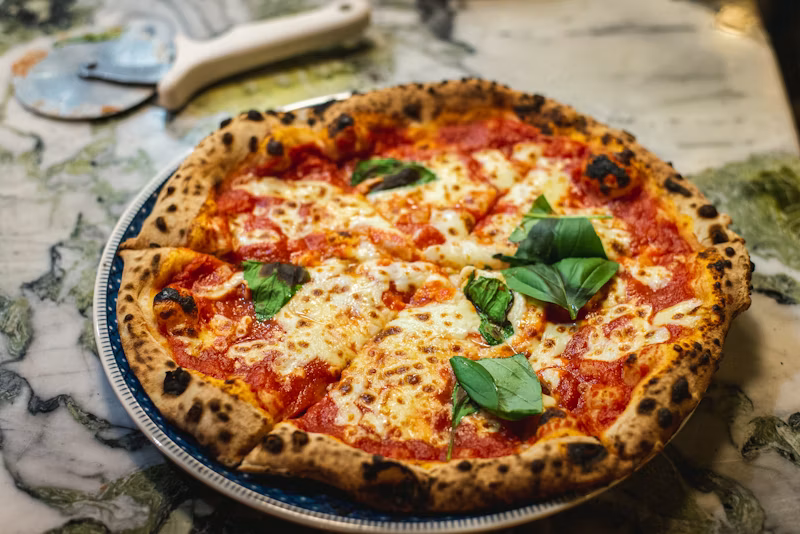

Prep Time
20 min
Cook Time
100 min
Servings
9 pepole
4.5
(156 reviews)
Intermediate
Italian
Vegetable Curry
Hearty vegetarian curry with coconut milk
Extended Preparation Time
This recipe requires more than 45 minutes to prepare. Plan accordingly!
- 1 4 large onions, thinly sliced
- 2 4 tablespoons butter
- 3 4 tablespoons butter
- 4 1/2 cup white wine
- 5 2 bay leaves
- 6 Fresh thyme
- 7 Baguette slices
- 8 200g Gruyère cheese, grated
- 9 Potatoes
- 1 Melt butter in a large pot. Add onions and cook slowly for 40 minutes, stirring occasionally until caramelized.
- 2 Add white wine and deglaze the pot, scraping up brown bits.
- 3 Pour in beef broth, add bay leaves and thyme. Simmer for 20 minutes.
- 4 Meanwhile, toast baguette slices until golden.
- 5 Ladle soup into oven-safe bowls. Top with toasted bread and cheese.
- 6 Broil for 3-5 minutes until cheese is melted and bubbly. Serve hot.
Calories
580 kcal
Protein
36g
Carbohydrates
32g
Fat
32g
Fiber
8g
Sodium
850g
- Don't press down on burgers while cooking - keeps them juicy
- Make indent in center to prevent burger from puffing up
- Let patties rest for 2-3 minutes before serving
- Toast buns for better texture and flavor